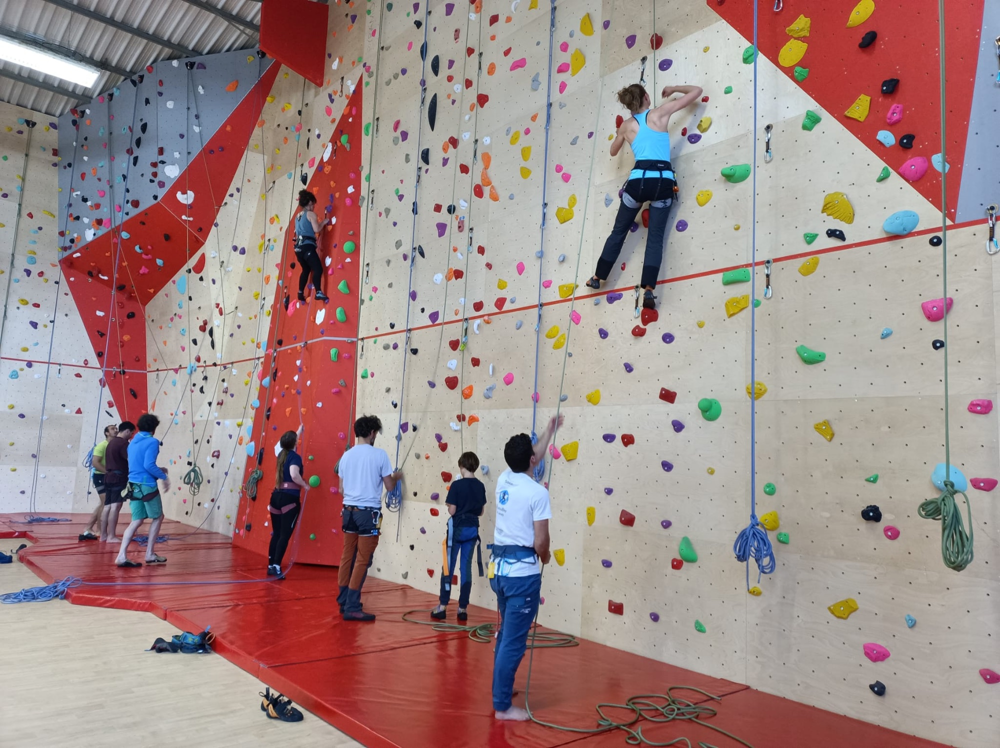
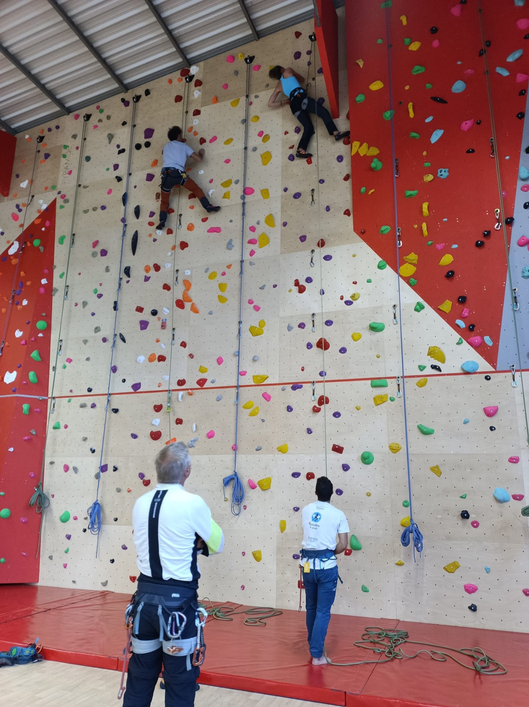
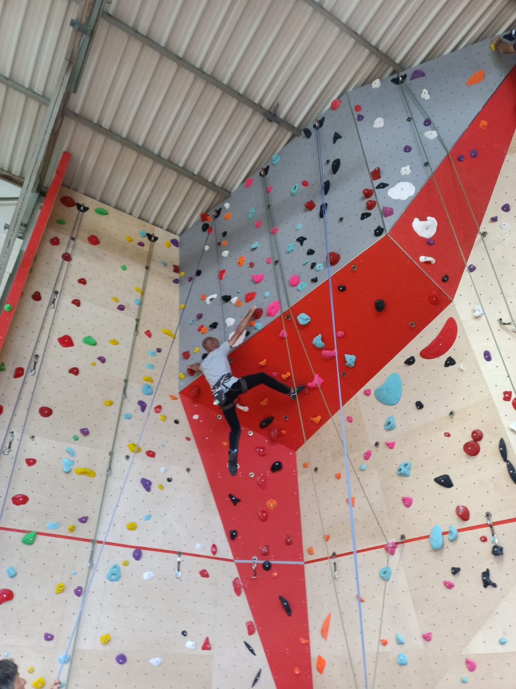
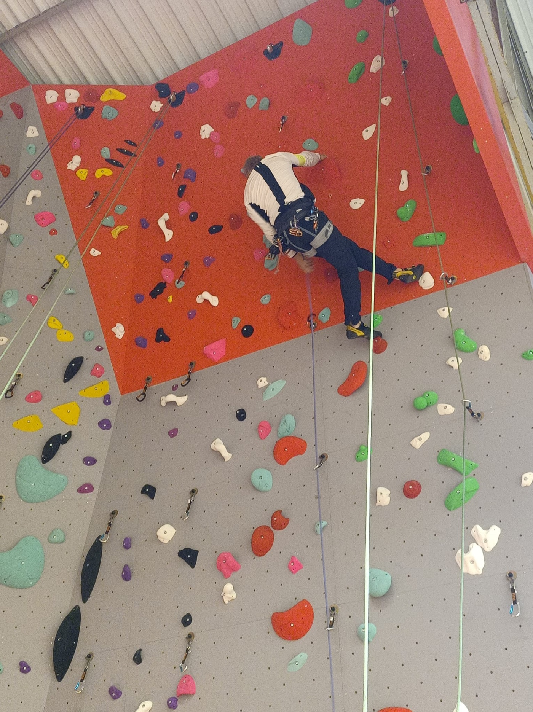
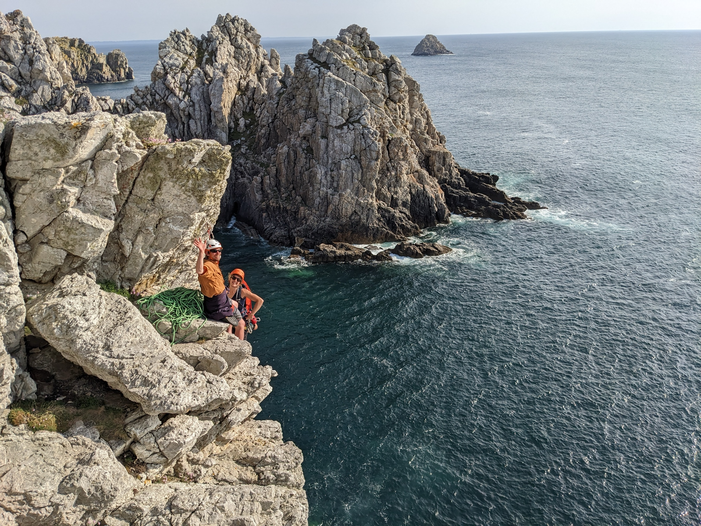
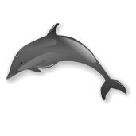

L'association
Les Grimpeurs de Pen-Hir anime le mur communal de Camaret-sur-Mer, ouvert en 2026. Ce jeune club FFME propose de la grimpe libre, prépare des cours vers l'autonomie et organise ponctuellement des sorties en falaise.

Pour grimper, apprendre et faire cordée.
Le mur communal · ouvert en 2026
Les Grimpeurs de Pen-Hir anime le mur communal de Camaret-sur-Mer, ouvert en 2026. Ce jeune club FFME propose de la grimpe libre, prépare des cours vers l'autonomie et organise ponctuellement des sorties en falaise.
Pour venir grimper, il faut être membre de l'association et avoir pris sa licence FFME. Les séances libres nécessitent au minimum un passeport jaune validé.
Pas encore de passeport ou complètement débutant ? Plusieurs parcours sont proposés dès septembre.
Trouver ma formule ↓Juste devant le camping municipal du Lannic.
Voir sur la carte ↗Pour connaître le prochain créneau, poser une question ou rejoindre le club :
La nouvelle saison approche. Voici comment commencer à grimper selon votre expérience et votre niveau.
Calendrier et échanges sur WhatsApp ↗Vous avez déjà un peu de pratique mais vous hésitez entre plusieurs formules ? Écrivez-nous, nous vous aiderons à choisir.
300 m² de voies, 10 m de hauteur et 22 lignes, avec du dévers, un petit toit, de la dalle, du dièdre et des réouvertures régulières.




Le club organise ponctuellement des sorties pour découvrir les falaises de Pen-Hir ou d'autres sites, dans un cadre adapté au niveau du groupe.
Être prévenu de la prochaine sortie →